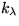

En aquest capítol ens centrarem en l'estudi de mètodes empírics de càlcul de color que són els que es troben implementats en la major part de llibreries gràfiques 3D.
Com hem analitzat anteriorment, els mètodes d'il·luminació empírics pel càlcul del color d'un punt Q consideren: la ubicació geomètrica del punt, la llum incident en el punt procedent dels focus de llum puntuals que hi hagi a l'escena, les característiques superficials del sòlid al que pertany el punt, la posició de l'observador i medis no participatius. A més a més, per a calcular la llum transmesa en la direcció de l'observador utilitzen fórmules empíriques simples d'avaluar i que produeixen imatges amb un grau de realisme acceptable.
Les característiques superficials dels l'objectes s'aproximen per constants () que representen el comportament del material respecte a la llum incident per a cada component fonamental del color (RGB), totes aquestes constants (excepte n) tenen valors definits en l'interval [0.0,1.0]. Així:
La inicialització d'aquestes variables no respon a cap principi de física de materials, sinó que és una manera subjectiva de modelitzar-los conegudes les seves característiques, el color i la rugositat de la superfície. Per a facilitar l'assignació de valors, usualment es descomponen les constants anteriors en dos termes: un representa el color de l'objecte (de manera informal, el color amb que s'ha pintat) i l'altre les propietats difosa i especular del material. Aquests darrers termes s'acostumen a definir constants per als tres colors primaris.
Així es defineixen per a cada objecte (o superfície segons l'aplicació) les següents constants, anomenades propietats de material:
A continuació es relacionen diferents models empírics que aproximen diferents aspectes de la transmissió de la llum. Veurem els models: ambient, difós i especular.